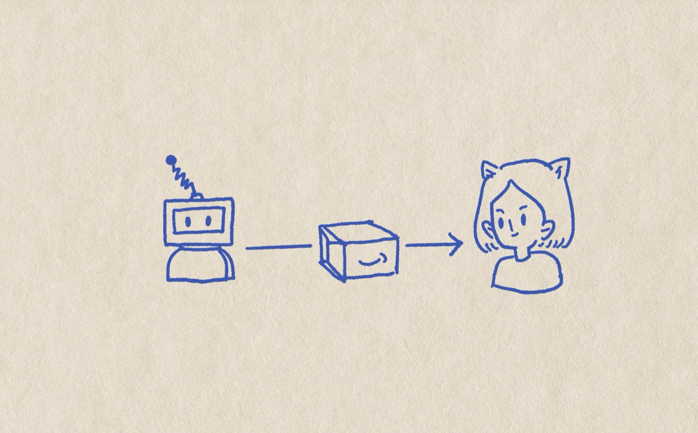
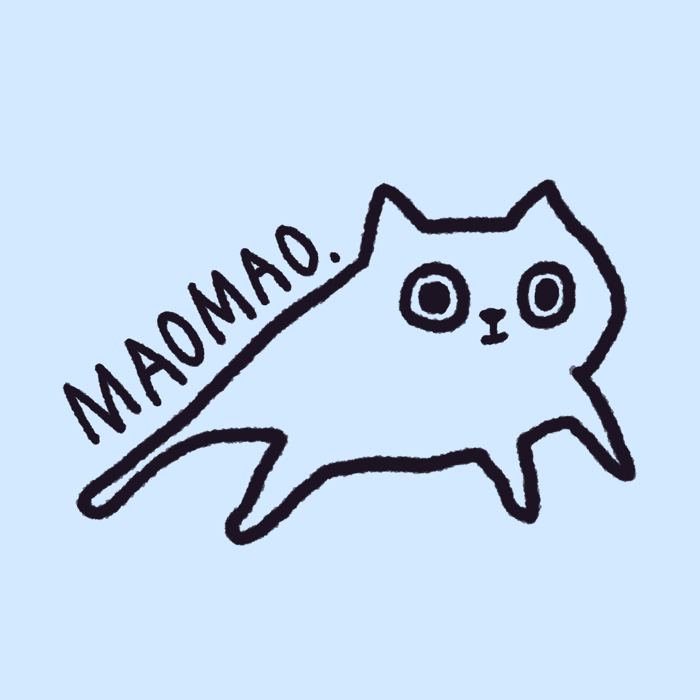
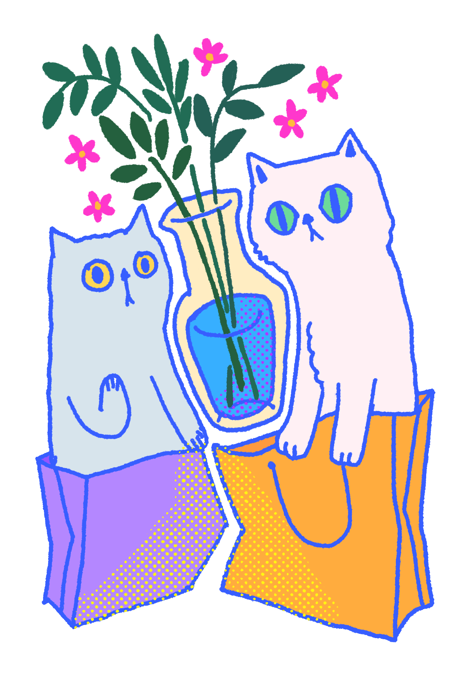
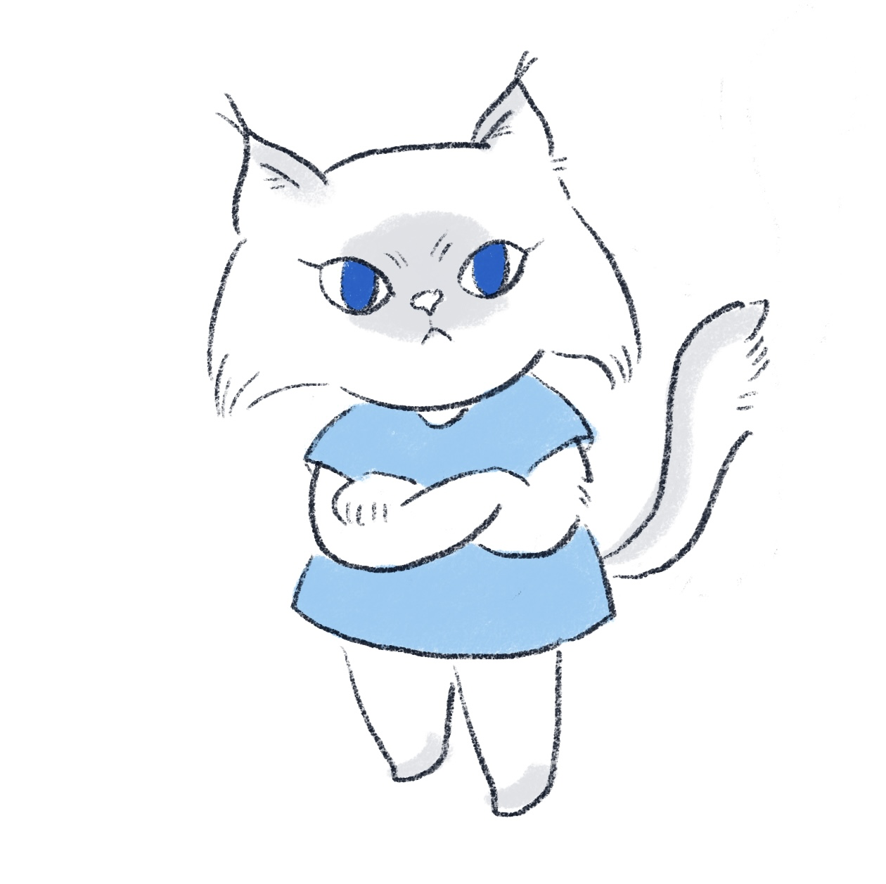
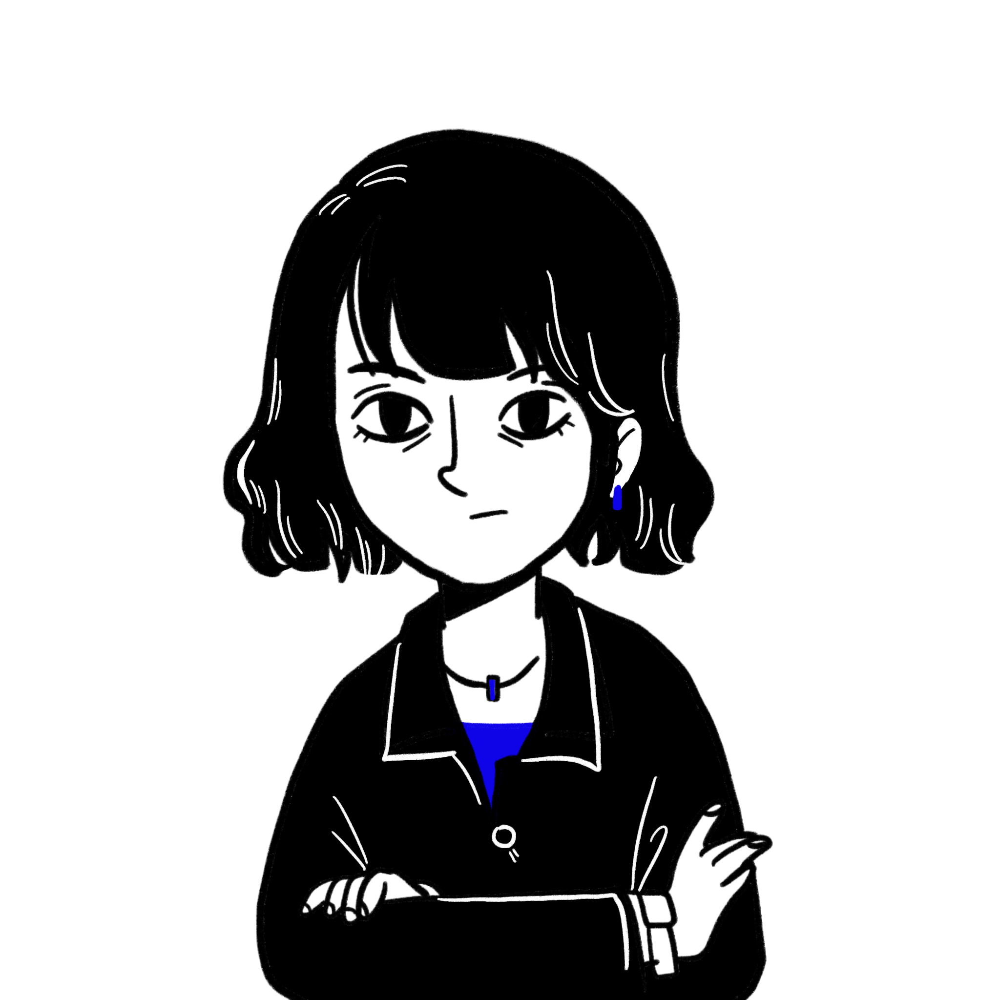
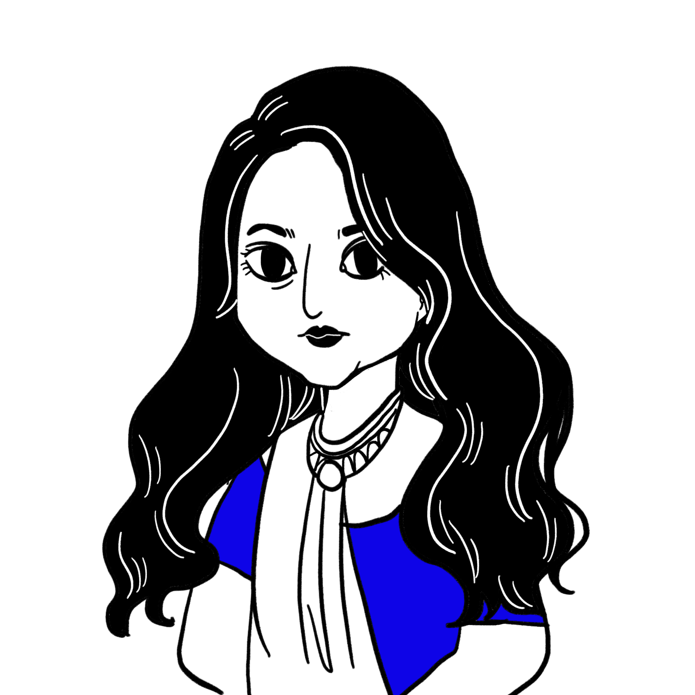
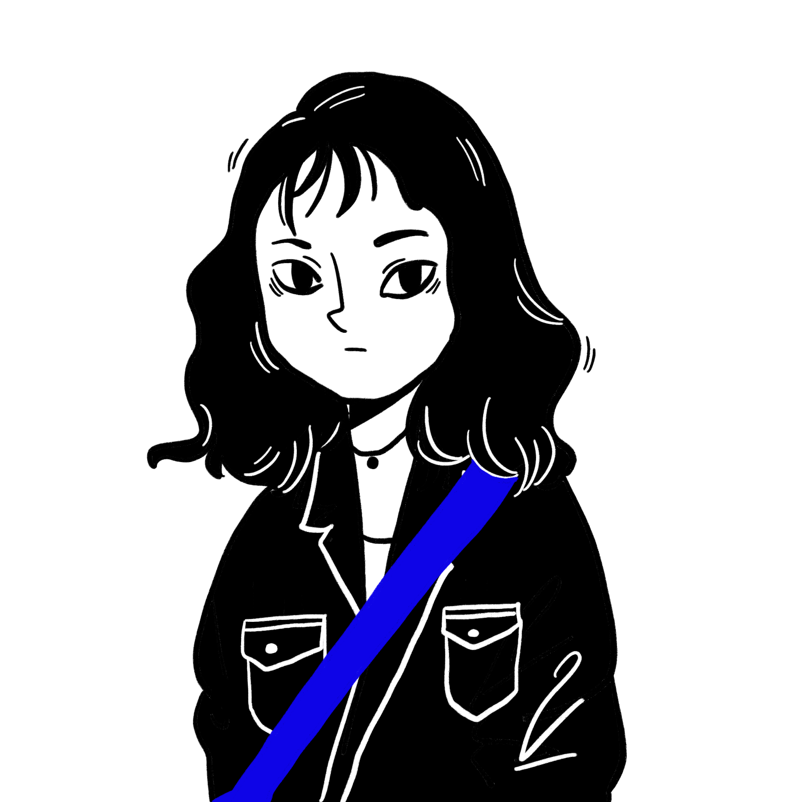
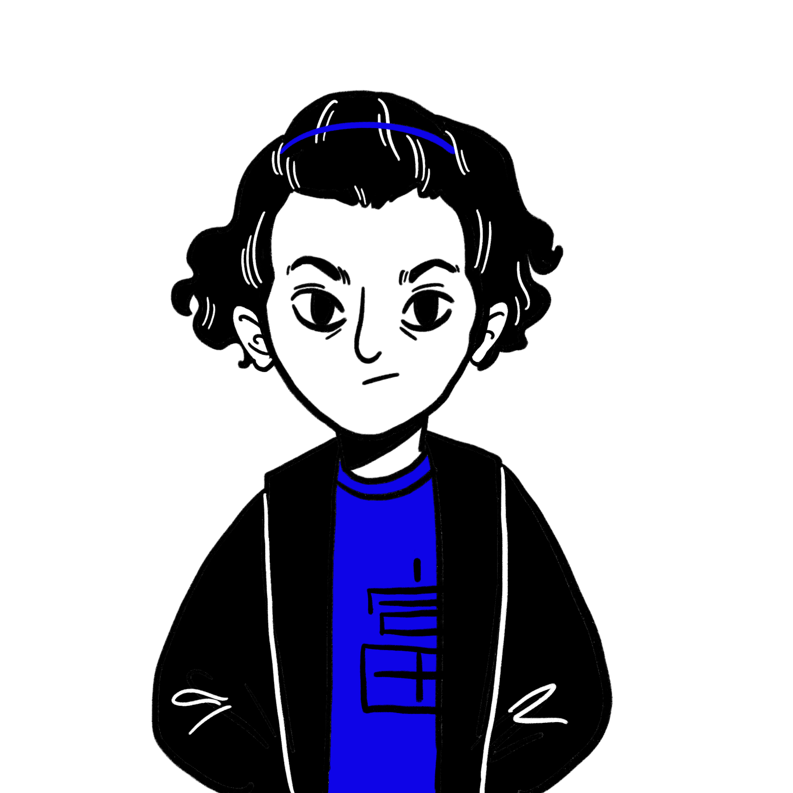

Different problems,
different shapes.

ADR UX — First designer, full ecosystem
Shaping the end-to-end experience across autonomous delivery robotics — from fleet systems to human-robot interaction
Read more →Cognos — From Chat to Cognition
ShippedGemini Hackathon project built with a fellow UX designer. We wanted to explore what AI conversations look like when they stop being linear chats and start behaving like spatial thinking — the way ideas actually form when you map them out.
The system analyzes chat history and organizes it into "Objects" — anchor topics of your thinking. Each Object contains "Nodes" — milestones, pivot points, facts, or concepts. As conversations continue, new connections emerge — the way our minds actually work.
As two UX designers without coding backgrounds, we vibe-coded the entire thing with Gemini as our development partner. Followed our UX process — user flows, screens, iteration — but with AI building alongside us. The biggest learning: prompt engineering itself can be AI-assisted. When stuck, we asked AI how to better talk to AI.
DSP Business Health Dashboard
Handed off
The team was building a Business Health Dashboard for Delivery Service Partners (DSPs) — the independent businesses that operate Amazon's last-mile delivery fleet. The assumption was that DSP owners needed a better data dashboard to track business performance.
DSP owners didn't want another dashboard full of metrics. They wanted intelligent guidance — help understanding what the numbers meant for their business and what actions to take. The gap wasn't missing data. It was missing interpretation.
I produced a gap analysis comparing the PRD assumptions against actual user needs and distributed it to stakeholders. Rather than quietly adjusting my designs to compensate, I pushed the conversation upstream — making the case that we were solving the wrong problem and needed to reframe before investing in execution.
The research shifted the product conversation from "what metrics should we show" to "how do we help DSP owners make better business decisions."
SCARTA — Container Tracking
Launched
Real-time container movement dashboard for Amazon sort center managers. The data was comprehensive but illegible. Ruthless information hierarchy — stripped to what drives the next decision.
Nazir — Construction Project Finance
LaunchedA 0-to-1 financial management tool for Amazon construction projects. Worked with another UX designer to establish the information architecture, key modules, end-to-end user flows, and product direction from scratch.
Translated complex financial workflows into clear, navigable structures that construction project managers could use without specialized training.
Wyze Air Purifier
Launched
Sole designer. 70% of smart purifier users never connected to the app. Reframed what the app was for — not more control, but contextual intelligence the physical device alone couldn't provide.
Shipped full IoT experience: setup, controls, settings, automation. Changed the team's mental model of "smart" from adding control to reducing the need for it.
Cats





Hand Drawing


TeamMates



